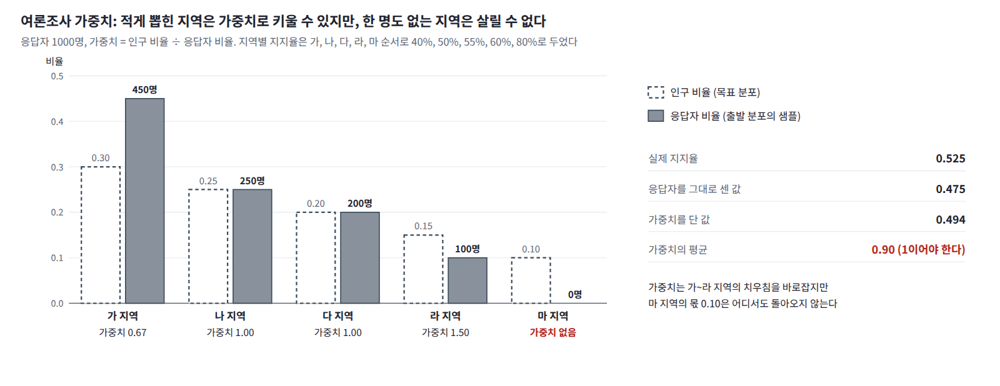

유효 표본 수: 가중치가 고르지 않으면
표의 모든 줄이 똑같이 정확하다면, 한 걸음도 움직이지 않는 넷째 줄로 충분하지 않을까?
가중치 몇 개가 합을 차지할 때
줄마다 다른 것은 정확도가 아니라 대가이고, 그 대가는 가중치가 얼마나 고르지 않은지에 나타난다. 가중치 몇 개가 합을 거의 다 차지하면 사슬을 많이 돌려도 실제로 답을 정하는 것은 그 몇 개뿐이다. 이것을 수로 나타낸 것이 유효 표본 수 (가중치의 합의 제곱을 가중치 제곱의 합으로 나눈 값으로, 가중치를 단 샘플들이 고르게 뽑은 샘플 몇 개만큼의 정보를 갖는지 나타내는 수, effective sample size)다. 앞의 여섯 경우에서 일의 평균과 유효 표본 수를 사슬 수에 대한 비율로 적으면 다음과 같다. ΔF = 0이므로 일의 평균이 곧 소산된 일의 평균이다.
| 수준 × 수준마다 걸음 | ⟨𝒲⟩ | 유효 표본 비율 |
|---|---|---|
| 10 × 100 | 0.733 | 0.46 |
| 10 × 10 | 0.826 | 0.43 |
| 10 × 1 | 7.691 | 0.27 |
| 10 × 0 | 23.477 | 0.19 |
| 100 × 10 | 0.086 | 0.83 |
| 1000 × 1 | 0.061 | 0.88 |
수준마다 한 걸음도 움직이지 않는 넷째 줄은 츠반치히식의 한순간 바꾸기, 곧 출발 분포에서 목표 분포로 곧장 건너는 보통의 중요도 샘플링이고, 소산된 일이 23.5에 이르러 유효 표본이 사슬의 19%로 줄어든다. 걸음을 늘리면 샘플이 분포를 따라가 소산된 일이 줄고 가중치가 고르게 된다.
같은 1000걸음을 쓰더라도 나누는 방법에 따라 결과가 크게 다르다. 수준 10개에 100걸음씩 쓰면 소산된 일이 0.733인데, 수준 1000개에 1걸음씩 쓰면 0.061로 10배 넘게 줄고 유효 표본은 0.46에서 0.88로 는다. 한 수준에서 오래 머물러도 다음 수준으로 크게 건너뛰는 순간의 일은 줄지 않으므로, 소산을 줄이는 것은 한 수준에 머무는 시간보다 매개변수를 바꾸는 빠르기다.
차원이 높으면
차원이 높으면 이 차이가 결정적이다. 좌표마다 소산된 일이 더해지므로 가중치의 퍼짐은 차원에 따라 지수적으로 커진다. 같은 두 봉우리를 좌표마다 독립으로 10개 붙인 10차원 목표에서 사슬 1만 개를 돌리면, 유효 표본이 곧장 건너는 중요도 샘플링에서는 1개, 수준 10개 × 100걸음에서는 54개, 수준 1000개 × 1걸음에서는 3009개다. 이미지처럼 수천 차원인 목표에서 곧장 건너는 중요도 샘플링이 쓸모없고 AIS가 긴 사다리를 쓰는 까닭이 이것이다.
문제 3. 여론조사의 가중치
어느 시의 인구는 동부 50%, 서부 30%, 북부 20%다. 여론조사 응답자 100명은 동부 70명, 서부 30명, 북부 0명이었다. 실제 지지율은 동부 40%, 서부 60%, 북부 70%라고 하자(조사하는 쪽은 모른다). (가) 응답을 그대로 센 지지율은? (나) 지역마다 가중치를 인구 비율 ÷ 응답자 비율로 달아 다시 세면? (다) 가중치의 평균은 얼마여야 하고, 실제로는 얼마인가?

그대로 세면 46%예요. 가중치는 동부 0.5/0.7 = 0.714, 서부 0.3/0.3 = 1이라 다시 세면 47.5%고요. 보정 끝이요.

가중치의 평균부터 봐야지. 인구 비율 ÷ 응답자 비율을 응답자 전체로 평균하면 인구 비율을 다 더한 값이라 1이어야 하는데, (70 × 0.714 + 30 × 1)/100 = 0.8이야.

0.8이면 인구의 20%가 응답자 가운데 한 명도 없다는 뜻이에요. 가중치는 있는 응답을 부풀리거나 줄일 뿐이라, 47.5%는 동부와 서부만의 지지율이에요. 북부까지 넣은 실제 지지율은 52%고요.

출석을 앞줄만 부르고 반 전체 출석률이라고 적은 거네요.
가중치 평균이 1인지만 봐도 빠진 곳이 있는지 알 수 있겠다.
문제 4. 일과 열을 헷갈리면
두 봉우리 목표에 수준 10개 × 1걸음의 사다리로 AIS를 돌린다. 민준이는 가중치를 만들 때 사슬마다 처음과 끝의 에너지 차이 U_끝(x_끝) − U_출발(x_출발)을 𝒲로 적었다. 무엇이 나오는가?

일은 에너지가 늘어난 양이니까 끝 에너지에서 처음 에너지를 뺐어요. 그런데… 가중치를 단 오른쪽 비율이 0.841이고 가중치의 평균이 2.956이에요. 1이어야 하는데. 걸음을 100으로 늘리면 0.952랑 21.3이 돼요. 더 나빠져요!

처음과 끝의 에너지 차이는 일 더하기 열이잖아. 사슬이 골짜기 바닥으로 내려가면서 열원에 준 에너지까지 넣었으니까 걸음이 많을수록 더 틀리지.
그래요. 일은 샘플을 그 자리에 두고 분포만 바꾼 순간의 에너지 변화예요. 움직여서 생긴 변화는 열이고요. 유효 표본도 보세요.
10 × 1에서 0.009, 100걸음에서는 0.000이에요. 사슬 몇 개가 가중치를 다 가져갔네요. 통장 잔고가 늘어난 걸 전부 월급으로 적은 셈이에요. 이자랑 지출까지 섞어 버렸어요.
문제 5. 뒤처진 두 봉우리를 가중치로 되살리기
목표는 −2에 비중 0.2, +2에 비중 0.8, 표준편차 0.5인 두 봉우리다. 잡음의 표준편차를 5에서 0.1까지 10단계로 줄이는 담금질 랑주뱅을 단계마다 1걸음씩 돌리면 오른쪽 비율이 참값 0.8에서 크게 뒤처진다. (가) 가중치를 달아 0.8을 되찾아라. 가중치의 평균도 확인하라. (나) 랑주뱅을 한 걸음도 돌리지 않고 가중치만 달아도 되는가? (다) 모두 1000걸음을 쓸 수 있다면 사다리를 어떻게 나누겠는가?
담금질 랑주뱅에서 한 단계에 1걸음이면 0.588이었던 그 문제네요. 이번엔 가중치를 달아 볼게요. 출발은 그때처럼 −6에서 6 사이 균등분포로 두고, 균등분포의 밀도 1/12에서 첫 수준으로 바꿀 때부터 분포를 바꿀 때마다 로그밀도 차이를 더했어요. 가중치를 달기 전엔 0.592, 달면… 0.799! 됐다!

가중치의 평균도 봐야지. 잡음 수준들은 다 정규화돼 있으니까 1이 나와야 해.
0.868이에요. 걸음을 10으로 늘리면 비율은 0.798인데 평균이 0.736이고요. 비율은 맞는데 Z가 틀려요.
여론조사에서 가중치 평균이 0.8로 나왔던 거랑 같은 모양이야. 어딘가 샘플이 없는 곳이 있다는 거지.
첫 수준의 분포를 보세요. 잡음 표준편차 5를 섞으면 분포가 어디까지 퍼져 있죠?
표준편차가 5쯤 되니까… −6과 6 바깥에도 확률이 있어요. 계산하면 −6에서 6 사이에 0.731이고, 27%는 바깥이에요.

아, 제 출발 분포는 그 바깥에 샘플을 한 개도 안 만들어요. 가중치는 있는 샘플을 부풀리거나 줄일 수만 있지, 없는 곳에 샘플을 만들 수는 없네요.
그래요. 10걸음에서 가중치의 평균이 그 0.731 근처에 온 것도 그 때문이에요. 출발 분포는 목표가 있는 곳을 모두 덮어야 해요.
여론조사랑 같네요. 20대 응답자가 적게 뽑히면 가중치를 크게 줘서 맞추는데, 응답자가 한 명도 없는 지역은 가중치로도 못 살리잖아요. 출발을 표준편차 5인 정규분포로 바꿨어요. 가중치를 달기 전 0.579, 달면 0.801, 가중치의 평균 1.006이에요!
이제 (나). 한 걸음도 안 걸으면 출발 분포에서 목표로 곧장 건너는 보통의 중요도 샘플링인데, 이것도 0.800이 나와. 그럼 랑주뱅은 왜 돌려?
유효 표본을 보세요. 곧장 건너면 사슬 10만 개 가운데 19%만 쓸모 있어요. 1차원이라 그 정도지, 같은 두 봉우리를 좌표마다 독립으로 10개 붙인 10차원에서 사슬 1만 개를 돌리면 유효 표본이 1개예요.
곧장 건너면 1차원에서 이미 소산된 일이 23.5인데, 그게 좌표마다 더해지니까요.
그럼 (다)는 한 수준에 오래 머무는 게 좋겠죠. 수준 10개에 100걸음씩이요. 소산된 일이 0.733, 유효 표본이 0.46이에요.

나는 반대로 수준 1000개에 1걸음씩 줬어. 소산된 일 0.061, 유효 표본 0.88이야. 네 것보다 10배 넘게 적게 새어 나갔어.

걸음 수는 똑같은데요? 한 수준에서 오래 섞는 게 더 평형에 가까울 것 같은데.
아무리 오래 섞어도 다음 수준으로 건너뛰는 순간은 한순간 바꾸기예요. 그 순간의 소산은 건너뛰는 폭이 정하고, 머무는 시간으로는 줄지 않아요.
수준 1000개면 건너뛰는 폭이 작아서 매번 거의 평형에서 조금만 바꾸는 거네요. 그러면 일이 정규분포에 가까워지니까 ⟨𝒲⟩ ≈ Var(𝒲)/2도 맞겠네요. 확인해 보면… 0.0611 대 0.0616이에요. 수준 10개 × 100걸음은 0.733 대 1.17로 안 맞고요.
결국 0.588은 샘플이 뒤처져서 생긴 거였고, 뒤처진 만큼은 가중치가 갚아 주는 거네요. 너무 서두르면 갚을 몫이 사슬 몇 개에 몰리고요.

정리하면, 출발 분포가 목표를 덮고 각 수준의 움직임이 그 분포를 지키는 것은 정확성의 조건이고, 사다리를 촘촘히 놓는 것은 효율의 조건이에요.
